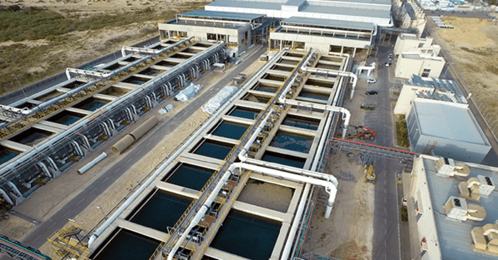

When demand meets growth, what happens?
The growing need for more reliable transport.
In large cities with rapidly growing populations, demand for convenient transport is high. Once the need for transport is valued more highly than project costs, the conditions for how and where we build new transport may have no limits. See also: Fast, Reliable Transport. https://www.fremtidsbloggen.com/post/rask-og-p%C3%A5litelig-transport-som-endrer-hvor-vi-bor-og-beve
I mean simply that something can become so highly valued that its cost matters little compared with its usefulness.
The need for clean water.
An obvious solution exists but is expensive. Some have already begun using it: desalination, removing salt from salt water to make fresh water. The technology is not widespread; there are several solutions based on the same idea, some better than others.
A day will come when the technology is affordable and infrastructure costs fall considerably. This solution could help meet the need for clean water for billions of people in the future.

The desalination method
To turn water into fresh water.
These plants are also widely used to turn brackish water into fresh water.
There are two main principles behind desalination: thermal methods and pressure.
Here are examples of these principles:
1. Thermal methods, using heat
Thermal desalination has been practised on a large scale for more than 60 years, mainly in the Middle East, where it still dominates.
Thermal desalination uses a heat source.
How thermal desalination works:
Multi-stage flash distillation (MSF):
Heated water boils under a rapid pressure drop and the vapour condenses. Condensation occurs on surfaces in contact with the incoming salt water, so most of the heat of evaporation is recovered and the feed water is preheated.
This happens sequentially in several stages. Freshwater recovery is around 25–50%. Characteristics include high volume, corrosion, scaling and substantial chemical use.
Multi-effect distillation (MED):
A plant may have vertical or horizontal tubes where steam condenses on one side and transfers heat to salt water on the other. Pressure falls at each stage, or effect, as temperature falls and additional heat is supplied.
Vapour compression distillation (VCD):
These plants compress water vapour at a heat-transfer surface with salt water on the other side, recovering the heat of evaporation. The salt water heats up and evaporates. The compressor increases vapour pressure and lowers brine pressure to reduce its boiling point.
The three brief explanations of thermal desalination above were drawn from a journal and translated into Norwegian.
2. Membrane methods, using pressure and filtration
In brief, membrane desalination uses high pressure from pumps to separate fresh water from brackish water or seawater.
Salt water is pressed against a membrane that selectively lets water pass while retaining salt.
Simply put, a membrane acts as an advanced filter preventing unwanted chemicals from entering drinking water.
Today there are desalination plants in more than 120 countries in various forms.
The issue is that turning salt water into fresh water costs money and requires a considerable amount of energy. Electricity production has not yet reached an era of unlimited, inexpensive supply, such as a future with fusion reactors copying how the sun produces energy.
When energy costs fall sufficiently, many such plants could be built and help ensure enough clean water.
A by-product of desalination is brine, a highly concentrated salty sludge. Many current plants discharge it directly into the open sea, which is bad for marine life. But there must be solutions to that too.
To summarise, two main issues in desalination need solving: energy demand and the brine by-product.
We should one day recognise that the need for water matters more than money. The cost is what it is. Water is needed not only by us but also by forests and crops, including vertical indoor farms.
Pipes and channels show the way.
The need for electronic components.
Earth has limited natural resources, especially those used to make electronics. What happens as resources approach exhaustion: catastrophe, or innovation by people who understand the problem before it occurs?
I see three possible solutions, mainly because the need for electronics will only increase: demand becomes greater and meets growth.
The first obvious solution is recycling. Electronics become obsolete and are thrown away. Why not recycle every discarded device for use in new electronics? The United Nations and global community should embrace this. Much already happens, but it must increase substantially to produce truly good results.
The second is finding new materials good enough, or better, for modern electronics. Graphene is a popular example: not yet widely used but potentially useful, with substantial supplies. Otherwise we repeat the process of exhausting one material and finding another. This material also has limits.
The third is exploring space and discovering major resources on asteroids or planets. Companies are already learning and testing the possibility of space mining. Personally, I think this is the best option, mainly because moving mining away from Earth could help preserve our planet.
These are some of the demands our species must handle when growth becomes the driving factor.

Asteroids, mining and planet Earth
The first asteroid-mining company was founded in 2012 by Peter Diamandis, Chris Lewicki and others in Washington, USA. A year later the American company Deep Space Industries was established by Rick Tumlinson, Stephen Cover and others.
According to a Caltech study, establishing an asteroid-mining operation in space would cost about $2.6 billion. That sounds like a lot, but a very large rare-metal mine on Earth might cost up to $1 billion depending on location, deposit type, purity and other factors. Researchers have estimated that a football-field-sized asteroid could contain nearly $50 billion worth of platinum.
Asteroid mining involves difficult questions. Getting there is one thing; can the material be brought back to Earth? What happens to its value if it is? It would probably fall considerably. Would it still be worth bringing rare metals back, perhaps not to enrich ourselves but to supply resources for building the modern world?
I expect a market would determine prices based on supply and demand. People living across the Milky Way would have different needs, depending on the technologies they were developing and the metals required.
Fun fact: researchers believe they found an asteroid between Jupiter and Mars called Psyche, containing enormous quantities of gold among other things. At today’s gold prices, what might it be worth? Around $700 quintillion. NASA plans to send an uncrewed craft to the asteroid in 2022, arriving in 2026.
But again, what would gold be worth if we began bringing large amounts to Earth from space? How would the market be regulated? Consider the same question for other valuable materials extracted from asteroids.